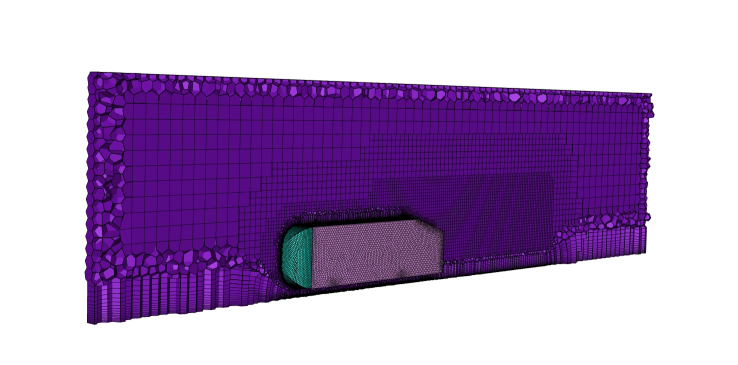
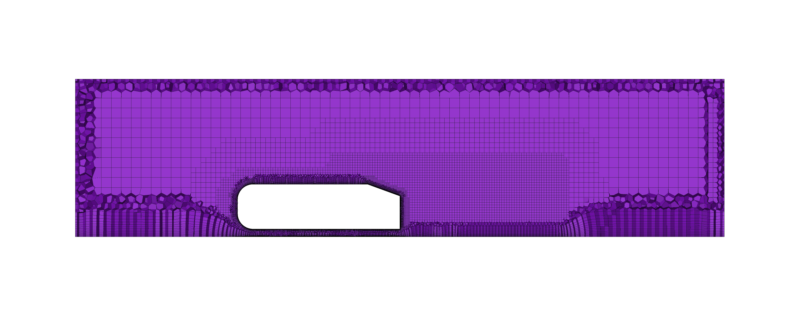
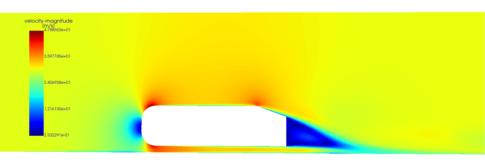
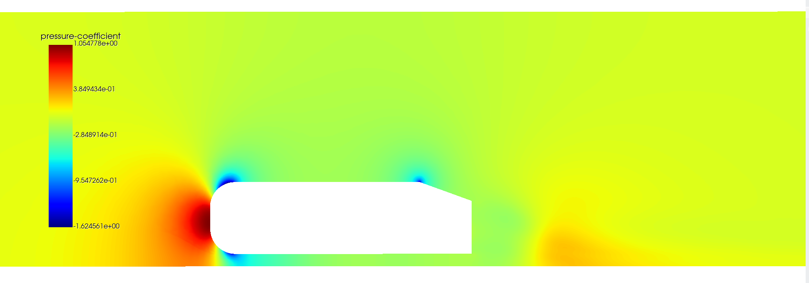

Note
Click here to download the full example code
Ahmed Body External Aerodynamics Simulation#
Objective#
Ahmed body is a simplified car model used for studying the flow around it and to predict the drag and lift forces. The model consists of a slanted back and a blunt front.
In this example, PyFluent API is used to perform Ahmed Body external aerodynamics simulation. which includes typical workflow of CFD Simulation as follows:
Importing the geometry/CAD model.
Meshing the geometry.
Setting up the solver.
Running the solver.
Post-processing the results.
Import required libraries/modules#
import os
from pathlib import Path
import ansys.fluent.core as pyfluent
from ansys.fluent.core import examples
try:
import ansys.fluent.visualization.pyvista as pv
except ImportError:
import ansys.fluent.post.pyvista as pv
from ansys.fluent.visualization import set_config
Configure specific settings for this example#
set_config(blocking=True, set_view_on_display="isometric")
os.chdir(pyfluent.EXAMPLES_PATH)
Launch Fluent session with meshing mode#
session = pyfluent.launch_fluent(mode="meshing", show_gui=True, cleanup_on_exit=True)
session.check_health()
Meshing Workflow#
Initialize the Meshing Workflow#
workflow = session.workflow
geometry_filename = examples.download_file(
"ahmed_body_20_0degree_boi_half.scdoc",
"pyfluent/examples/Ahmed-Body-Simulation",
)
workflow.InitializeWorkflow(WorkflowType="Watertight Geometry")
workflow.TaskObject["Import Geometry"].Arguments = dict(FileName=geometry_filename)
workflow.TaskObject["Import Geometry"].Execute()
Add Local Face Sizing#
add_local_sizing = workflow.TaskObject["Add Local Sizing"]
add_local_sizing.Arguments = dict(
{
"AddChild": "yes",
"BOIControlName": "facesize_front",
"BOIFaceLabelList": ["wall_ahmed_body_front"],
"BOIGrowthRate": 1.15,
"BOISize": 8,
}
)
add_local_sizing.Execute()
add_local_sizing.InsertCompoundChildTask()
workflow.TaskObject["Add Local Sizing"].Execute()
add_local_sizing = workflow.TaskObject["Add Local Sizing"]
add_local_sizing.Arguments = dict(
{
"AddChild": "yes",
"BOIControlName": "facesize_rear",
"BOIFaceLabelList": ["wall_ahmed_body_rear"],
"BOIGrowthRate": 1.15,
"BOISize": 5,
}
)
add_local_sizing.Execute()
add_local_sizing.InsertCompoundChildTask()
workflow.TaskObject["Add Local Sizing"].Execute()
add_local_sizing = workflow.TaskObject["Add Local Sizing"]
add_local_sizing.Arguments = dict(
{
"AddChild": "yes",
"BOIControlName": "facesize_main",
"BOIFaceLabelList": ["wall_ahmed_body_main"],
"BOIGrowthRate": 1.15,
"BOISize": 12,
}
)
add_local_sizing.Execute()
Add BOI (Body of Influence) Sizing#
add_boi_sizing = workflow.TaskObject["Add Local Sizing"]
add_boi_sizing.InsertCompoundChildTask()
add_boi_sizing.Arguments = dict(
{
"AddChild": "yes",
"BOIControlName": "boi_1",
"BOIExecution": "Body Of Influence",
"BOIFaceLabelList": ["ahmed_body_20_0degree_boi_half-boi"],
"BOISize": 20,
}
)
add_boi_sizing.Execute()
add_boi_sizing.InsertCompoundChildTask()
Add Surface Mesh Sizing#
generate_surface_mesh = workflow.TaskObject["Generate the Surface Mesh"]
generate_surface_mesh.Arguments = dict(
{
"CFDSurfaceMeshControls": {
"CurvatureNormalAngle": 12,
"GrowthRate": 1.15,
"MaxSize": 50,
"MinSize": 1,
"SizeFunctions": "Curvature",
}
}
)
generate_surface_mesh.Execute()
generate_surface_mesh.InsertNextTask(CommandName="ImproveSurfaceMesh")
improve_surface_mesh = workflow.TaskObject["Improve Surface Mesh"]
improve_surface_mesh.Arguments.update_dict({"FaceQualityLimit": 0.4})
improve_surface_mesh.Execute()
Describe Geometry, Update Boundaries, Update Regions#
workflow.TaskObject["Describe Geometry"].Arguments = dict(
CappingRequired="Yes",
SetupType="The geometry consists of only fluid regions with no voids",
)
workflow.TaskObject["Describe Geometry"].Execute()
workflow.TaskObject["Update Boundaries"].Execute()
workflow.TaskObject["Update Regions"].Execute()
Add Boundary Layers#
add_boundary_layers = workflow.TaskObject["Add Boundary Layers"]
add_boundary_layers.AddChildToTask()
add_boundary_layers.InsertCompoundChildTask()
workflow.TaskObject["smooth-transition_1"].Arguments.update_dict(
{
"BLControlName": "smooth-transition_1",
"NumberOfLayers": 14,
"Rate": 1.15,
"TransitionRatio": 0.5,
}
)
add_boundary_layers.Execute()
Generate the Volume Mesh#
generate_volume_mesh = workflow.TaskObject["Generate the Volume Mesh"]
generate_volume_mesh.Arguments.update_dict({"VolumeFill": "poly-hexcore"})
generate_volume_mesh.Execute()
Switch to the Solver Mode#
session = session.switch_to_solver()
Mesh Visualization#
 Solver Setup and Solve Workflow#
Define Constants#
density = 1.225
inlet_velocity = 30
inlet_area = 0.11203202
Define Materials#
session.tui.define.materials.change_create("air", "air", "yes", "constant", density)
session.tui.define.models.viscous.ke_realizable("yes")
session.tui.define.models.viscous.curvature_correction("yes")
Define Boundary Conditions#
inlet = session.setup.boundary_conditions.velocity_inlet["inlet"]
inlet.turb_intensity = 0.05
inlet.vmag = inlet_velocity
inlet.turb_viscosity_ratio = 5
outlet = session.setup.boundary_conditions.pressure_outlet["outlet"]
outlet.turb_intensity = 0.05
Define Reference Values#
session.tui.report.reference_values.area(inlet_area)
session.tui.report.reference_values.density(density)
session.tui.report.reference_values.velocity(inlet_velocity)
Define Solver Settings#
session.tui.solve.set.p_v_coupling(24)
session.tui.solve.set.discretization_scheme("pressure", 12)
session.tui.solve.set.discretization_scheme("k", 1)
session.tui.solve.set.discretization_scheme("epsilon", 1)
session.tui.solve.initialize.set_defaults("k", 0.000001)
session.tui.solve.monitors.residual.convergence_criteria(
0.0001, 0.0001, 0.0001, 0.0001, 0.0001, 0.0001
)
Define Report Definitions#
session.tui.solve.report_definitions.add(
"cd-mon1",
"drag",
"thread-names",
"*ahmed*",
"()",
"scaled?",
"yes",
"force-vector",
"0 0 1",
"q",
)
session.tui.define.parameters.output_parameters.create("report-definition", "cd-mon1")
session.tui.solve.report_plots.add("cd-mon1", "report-defs", "cd-mon1", "()", "q")
Initialize and Run Solver#
session.tui.solve.set.number_of_iterations(5)
session.tui.solve.initialize.initialize_flow()
session.tui.solve.iterate()
Post-Processing Workflow#
session.tui.surface.iso_surface("x-coordinate", "xmid", "()", "()", 0, "()")
graphics_session1 = pv.Graphics(session)
contour1 = graphics_session1.Contours["contour-1"]
contour1.field = "velocity-magnitude"
contour1.surfaces_list = ["xmid"]
contour1.display("window-1")
contour2 = graphics_session1.Contours["contour-2"]
contour2.field.allowed_values
contour2.field = "pressure-coefficient"
contour2.surfaces_list = ["xmid"]
contour2.display("window-2")
Simulation Results Visualization#
Velocity Magnitude Contour
Pressure Coefficient Contour
Save the case file#
save_case_data_as = str(Path(pyfluent.EXAMPLES_PATH) / "ahmed_body_final.cas.h5")
session.tui.file.write_case_data(save_case_data_as)
Close the session#
session.exit()
References#
[1] S.R. Ahmed, G. Ramm, Some Salient Features of the Time-Averaged Ground Vehicle Wake,SAE-Paper 840300,1984
Total running time of the script: ( 0 minutes 0.000 seconds)